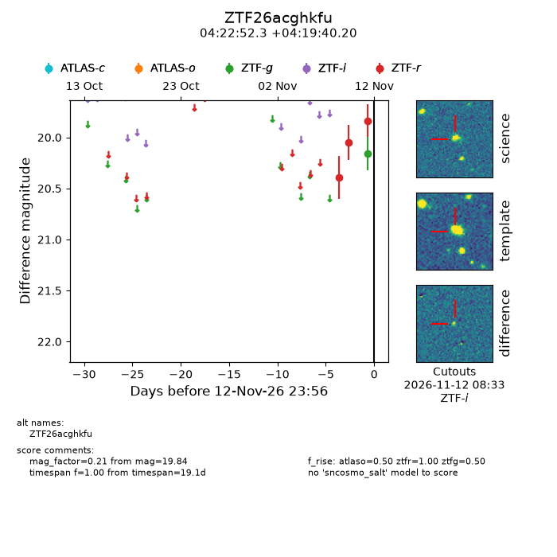
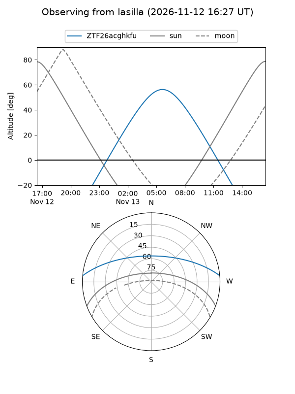
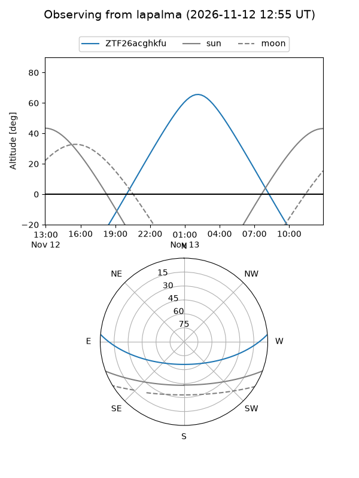
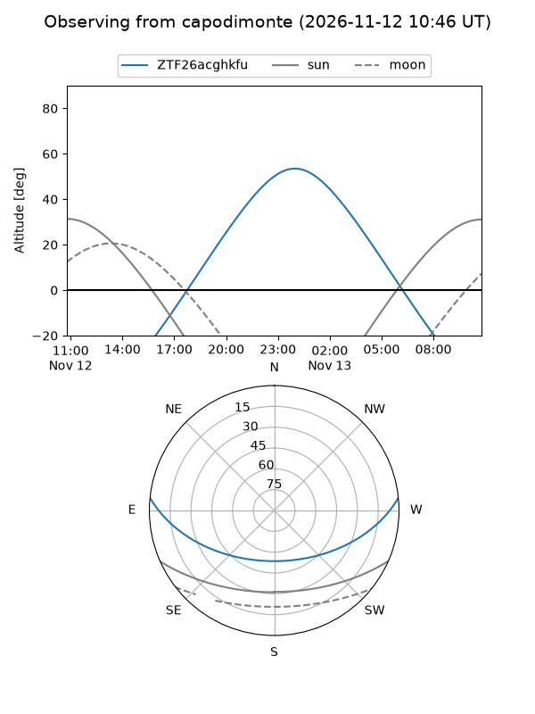
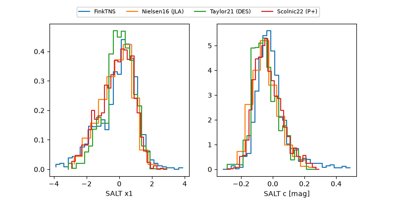

ZTF26acghkfu
Target ZTF26acghkfu at 2026-11-12 23:57
Aliases and brokers:
FINK-ZTF: ztf.fink-portal.org/ZTF26acghkfu
Lasair-ZTF: lasair-ztf.lsst.ac.uk/objects/ZTF26acghkfu
ALeRCE-ZTF: alerce.online/object/ZTF26acghkfu
Direct TNS query: direct search
alt names
ZTF26acghkfu (ztf,fink_ztf)
Coordinates:
equatorial (ra, dec) = 65.7178,+4.32783
equatorial (HMS+DMS) = 04:22:52.26,+04:19:40.20
galactic (l, b) = (189.6703,-30.09415)
Flags:
peak dt:
Photometry:
last atlaso=nan, ztfg=20.16, ztfr=19.84
1 atlaso, 1 ztfg, 3 ztfr detections
Lightcurve

Visibility



Additional plots
